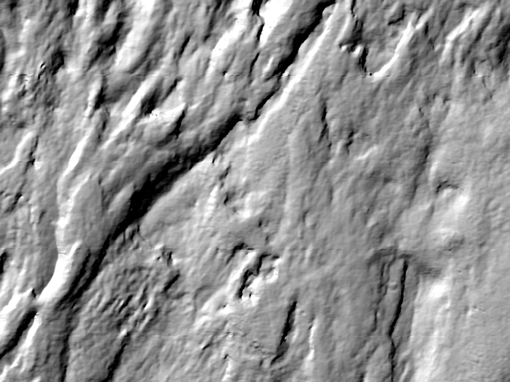

REAL DEM CALCULATION
Compare three possible rover paths
Routes are calculated from a real elevation-derived grid. The calculation window is a separate, previously processed Gale boxwork area; it does not match the selected color context map on the overview page.
Research prototype: these are least-cost terrain paths, not verified rover routes or safety claims. The model does not include rocks, soil traction, wheel slip, or rover-specific limits.
YOUR SELECTED MAP · CONTEXT ONLY
Color orbital preview

This is the 2 km preview selected in Mars Trek. It provides visual context. The route results are computed for the separate boxwork DEM window shown on the right.
Context bounds: 137.37402–137.40788°E, −4.70125 to −4.66751°
SEPARATE DEM WINDOW · ROUTES CALCULATED HERE
Gale boxwork terrain grid
Loading the DEM grid…
StartLoading…
DestinationLoading…
Direct separation—
Click the terrain grid to set the start. Then choose Destination and click again.
This is a user-selected planning threshold, not a NASA rover rule. All three routes are recalculated when it changes.

ROUTE OPTIONS
Computed from the DEM grid
Calculating…
How the calculation works and its limits
The app runs 8-connected A* over a 300 × 225 grid derived from the local Gale DEM crop. Each grid cell is about 3.005 m. The DEM mosaic is labeled 1 m, but the per-pixel source resolution for this crop was not verified; some mosaic areas may use coarser inputs. Cells above the selected slope threshold and cells marked no-data are excluded.
- Shortest: distance-only cost; the slope threshold is still a hard cutoff.
- Gentlest: distance cost plus a strong penalty for steep cells.
- Ridge heuristic: distance and slope cost plus a preference for a derived topographic-position score. It is a terrain heuristic, not measured scientific value.
The DEM is a separate local boxwork window. Its original retrieval date was not recorded. Elevation uncertainty is not provided by this grid. These paths are research-planning examples, not operational rover commands.
Data and credit
USGS MSL Gale Merged DEM 1 m · USGS Astrogeology / MSL project, served through NASA/JPL Mars Trek WMTS.
Local source crop: about 900 m × 677.5 m. Calculation grid: 300 × 225 cells at about 3.005 m spacing. Per-pixel DEM source resolution is unknown. Original DEM retrieval date was not recorded in the earlier project; files were copied here on 2026-11-15.